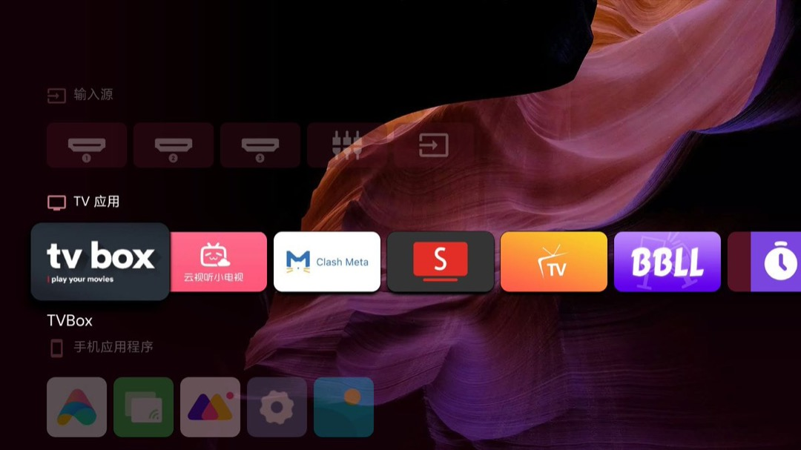
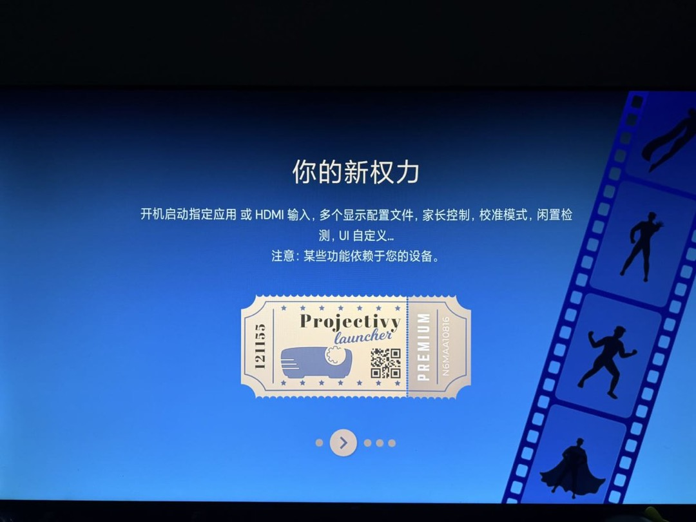

本期速览
01 腾讯积分月赠 210 元 DeepSeek
02 impeccable 用 62 条规则去 AI 味
03 企业知识库 RAG 重在权限与版本
04 强模型下 Skill 只用于流程与新手
05 小米电视免 root 解锁第三方桌面
01｜腾讯积分月赠 210 元 DeepSeek
来源（X） · @mranti · 2026-10-25 18:58
02｜impeccable 用 62 条规则去 AI 味
来源（X） · @GitTrend0x · 2026-10-25 08:30
5 个星标暴增最狠的项目，专业拆解下！
1. pbakaus/impeccable
让 AI 编程助手更懂设计的设计语言。
1 个 skill + 24 条命令 + 浏览器实时迭代 + 62 条确定性检测规则，专抓紫蓝渐变、卡片套卡片这些 AI 前端通病。
🔗 直达：https://github.com/pbakaus/impeccable
AI 写的页面终于不再千篇一律"Inter 字体 + 紫色渐变"了。619 星一天，总星冲破 8.6 万，审美革命正式打响！
🟢
2. makecindy/cindy
开源、开箱即用的 AI Agent。
把多种 harness、模型和工具整合进一个 Agent，在你自己的电脑上真刀真枪干活，桌面端、移动端全覆盖。
🔗 直达：https://github.com/makecindy/cindy
"想到，就能做到"，这口号够狂，Agent 已经从玩具变成打工人。477 星一天，个人 Agent 赛道又来猛将！
🟢🟢
3. Nutlope/hallmark
拒绝 AI 味的设计 Skill，支持 Claude Code、Codex、Cursor、OpenCode。
48 套主题随机发牌，在真实浏览器里逐条检查"机器味"痕迹，最后还有全新上下文的评审把关，Together AI 出品。
🔗 直达：https://github.com/Nutlope/hallmark
和 impeccable 同天上榜，反 AI-slop 统一战线成立了！455 星一天，设计师们可以松口气了。
🟢🟢🟢
4. luongnv89/claude-howto
可视化、案例驱动的 Claude Code 实战指南。
从基础概念一路讲到高级 Agent，附可直接复制的模板，还有中文版。
🔗 直达：https://github.com/luongnv89/claude-howto
"一个周末精通 Claude Code"，这是给新手的速成秘籍。392 星一天，总星 4.4 万，学习党狂喜！
🟢🟢🟢🟢
5. pollen-robotics/microduck
一只会走路的迷你双足鸭子机器人 🦆
这个仓库是鸭子的"大脑"：约 25cm、800g，Rust 写的 50Hz 控制循环用强化学习策略驱动 15 个舵机。
🔗 直达：https://github.com/pollen-robotics/microduck
具身智能也能这么可爱？RL 训练出来的鸭子步伐，萌到犯规。319 星一天，硬核与萌系兼得！
⚠️⚠️
总结：
今天的信号很清楚：AI 能写代码只是起点，写出"有品味"的东西才是下一个分水岭。设计 Skill + 开箱 Agent，就是 2026 的新基建！
03｜企业知识库 RAG 重在权限与版本
来源（X） · @UPing123zzz · 2026-10-25 16:38
上传 PDF，切成 Chunk，生成 Embedding，放进向量数据库，然后接一个大模型，最后做成聊天界面。
这套流程作为入门演示完全没问题，但如果要拿给企业真正使用，麻烦才刚刚开始。
比如一家公司的报销制度，2025 年和 2026 年分别有两个版本。现在员工问住宿报销上限，知识库应该回答哪个版本？
假如新制度已经生效，但旧文件还存在数据库里，系统把旧版检索出来，然后回答得特别流畅，这算不算幻觉？
从语言生成角度看，它可能完全忠实于检索材料。但从业务角度看，这个答案已经错了。
还有权限问题，总部可以看到所有门店的数据，门店只能看到自己有权访问的内容。如果只做语义检索，没有在正确的位置进行权限过滤，就可能出现两个用户问同一个问题，系统把不该给他的资料也检索出来。
这在企业里可不是普通的回答不准确，它可能直接涉及数据隔离和信息安全。
再往下还有很多麻烦。扫描 PDF 怎么解析，表格被拆开以后是否还能保留行列关系，文档更新了怎么同步，删除文件以后索引如何清理，两个资料相互矛盾的时候该相信哪个。
这些问题单独拿出来，都可以研究很久。
所以我现在看 RAG，更习惯把它分成两条主要流程。
一条负责把原始资料变成可以检索、可以更新、可以控制访问的数据；另一条负责理解用户问题、检索证据、排序，再根据证据生成回答。
其中每个环节都有自己的错误来源。Embedding 和 Rerank 当然重要，但不能因为换了一个更强的检索模型，就忽略前面资料解析错误或者权限规则不完整的问题。
我想做的企业知识库，至少应该让我查清楚几个东西。
这个答案引用了哪份资料，资料什么时候生效，用户有没有权限读取，系统为什么选择这个版本。如果没有足够证据，也应该能明确说明。
因为企业真正需要的，不只是一个特别会说话的 AI。
它还得知道自己依据的资料是什么，以及哪些话根本没有足够依据说出来。
04｜强模型下 Skill 只用于流程与新手
来源（X） · @zhu185178 · 2026-10-25 02:30
因为我发现不用 skill，现在的模型已经强到同样能完成我给它的任务。以前写 skill 是为了固化工作流程，它更像指南，告诉我的 Agent 先做什么、再做什么、要求是什么。但现在完全不需要了，而且说实话，不用 skill 出来的效果反而更好，特别是在做视频方面。
比如你上来先跟它聊，表达需求，让它 one-shot 或者 few-shot 做出一个带 3D 效果、加了各种转场和 motion 动效的产品宣传视频，你觉得非常不错，于是把这个过程沉淀成一个 skill。你期待后面直接用这个 skill 能快速做出同样的视频效果，但实际上并不会，甚至做出来的效果还不如最开始不用 skill 的时候。
这是 skill 不再起作用了吗？不是，是 skill 本身限制了模型的发挥，它既是地板，又是天花板。
所以到底要不要写 skill 呢？从我的理解，这分两个方面：
1. 对我来说，我只会为一些 SOP 流程写 skill。也就是不需要模型自由发挥、流程性质很强的任务，因为我要的是稳定复现。我需要这种既是地板又是天花板的限制，既能兜底，又不让模型走歪。这种情况我会自己写成 skill。
2. 另一种情况是面向新手。比如刚开始用 Claude Code 或者 Codex 的用户，往往说不清楚自己的需求。以做视频为例，他可能不知道要先写文案，再做分镜，接着配旁白和音乐，最后渲染成片。这时给他一个所谓的“视频生成的 skill” 就会很有帮助。但其实这个 skill 已经不再是帮助Agent 了，而是变成了 Agent 通过使用这个 Skill 来引导新用户让他能有逻辑、有框架、有结构地说清楚需求的工具。
除了这两种情况，从我的角度，已经想不到任何我还要还要写 skill 和 harness 的场景了。
当然，模型太弱所以需要 SKill 和搭 harness 是另外的话题。但如果模型已经强如 Opus 5.5，甚至后续出 Fable 5.5，skill 只会越用越少，harness 只会越来越薄，到最后完全依靠模型内生能力就足以执行和完成了。
05｜小米电视免 root 解锁第三方桌面
来源（X） · @wangrongding · 2026-10-25 05:26
小米竟然把第三方桌面锁死了😂随后让 agent 把固件 vdex 拆开，在 386MB 反汇编里找到了那行锁
全程免 root 可逆，整理成了 Agent Skill，你的 agent 可以开箱即用👇
https://github.com/wangrongding/tv-fresh

